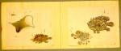

93. Japanse vissen
Katsuragawa Kurimoto Sui-gen, Giyo-rui siya-sin (Verschillende soorten vissen, naar de natuur getekend). Japans. Bundel met aquarellen, albumbladen van 355 x 440 mm. Japan, circa 1820. -- (Jap. Cat. 1013 II)
De samensteller behoorde tot de beroemde familie Katsuragawa, die tal van botanici en zoölogen heeft voortgebracht. De namen van de vissen zijn in klassiek Chinese karakters en in ‘katakana’ genoteerd. De Japanse bijschriften luiden:
- rechter bladzijde: 1. Vreemde vis, Shirezu geheten; 2. Dezelfde als rechts;
- linker bladzijde: 1. Een zeekrabachtig wezen, Oyuze geheten; 2. Dezelfde vis; 3. Suzumu-fugu (letterlijk: kleine egelvis of: zeemus).
Literatuur
- L. Serrurier, Bibliothèque japonaise. Catalogue raisonné des livres et des manuscrits japonais enrégistrés à la Bibliothèque de l’Université de Leyde. Leyde 1896, p. 218, 232.
| vorige pagina | top pagina |